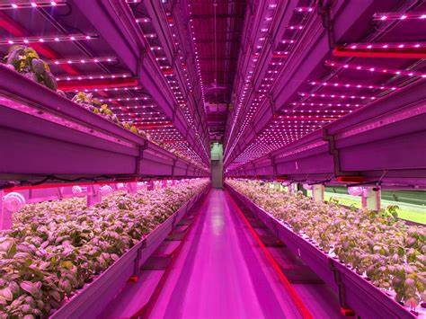
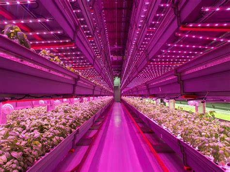

About Us
The “Krishi-Ratana” focuses on creating a comprehensive smart agriculture system that leverages various sensors to monitor and manage critical agricultural parameters in real-time. Among these sensors, the Nitrogen-Phosphorus-Potassium (NPK) sensor plays a pivotal role in assessing soil nutrient levels, ensuring that crops receive the optimal balance of essential nutrients for healthy growth. In addition to the NPK sensor, the Krishi-Ratana system incorporates soil moisture sensors, temperature sensors, and humidity sensors. Soil moisture sensors measure the water content in the soil, enabling precise irrigation management to prevent both overwatering and underwatering. Temperature sensors monitor the ambient temperature, ensuring that crops are grown under optimal thermal conditions. Humidity sensors track the moisture levels in the air, which is crucial for maintaining the right environment for crop development. By collecting data from these sensors, the Krishi-Ratana system provides farmers with actionable insights and automated solutions to optimize irrigation, fertilization, and pest control. The data is transmitted to a central cloud-based platform where advanced algorithms analyze it to generate recommendations for farmers. This real-time data analysis helps in making informed decisions, ultimately enhancing crop yield and quality. The Krishi-Ratana project aims to promote sustainable farming practices by optimizing resource use and reducing environmental impact. By leveraging IoT technologies, the project envisions a future where agriculture is more efficient, productive, and eco-friendly, contributing to food security and the well-being of the agricultural community.
Our Story
Krishiratan was created to bring advanced technology to the fields of every farmer. By providing easy-to-use tools and real-time data, we help farmers make informed decisions, leading to better yields and healthier crops.
What We Do
Real-Time Monitoring
Track moisture, pH, and nutrients instantly.
Weather Integration
Plan irrigation based on accurate weather data.
Data-Driven Recommendations
Receive tailored suggestions to optimize your crops.


 
